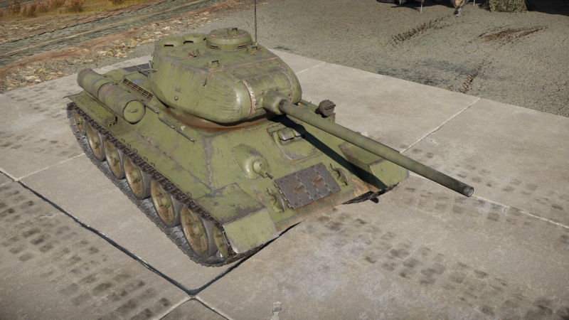
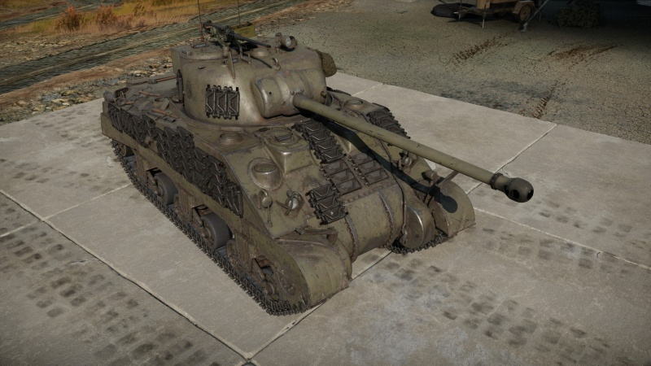
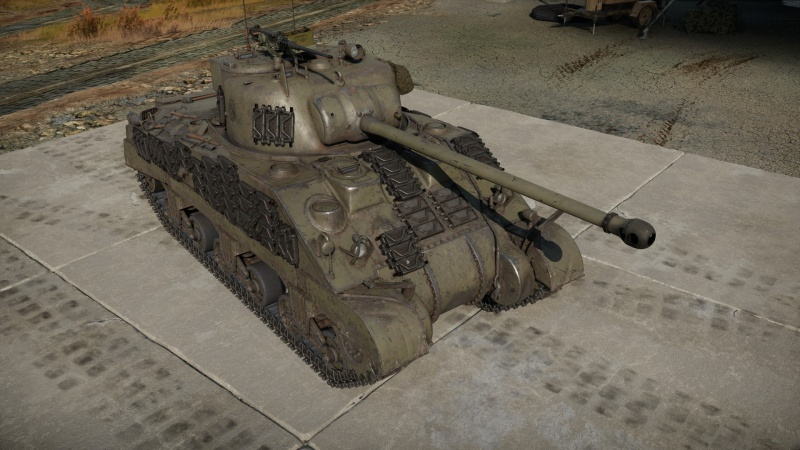
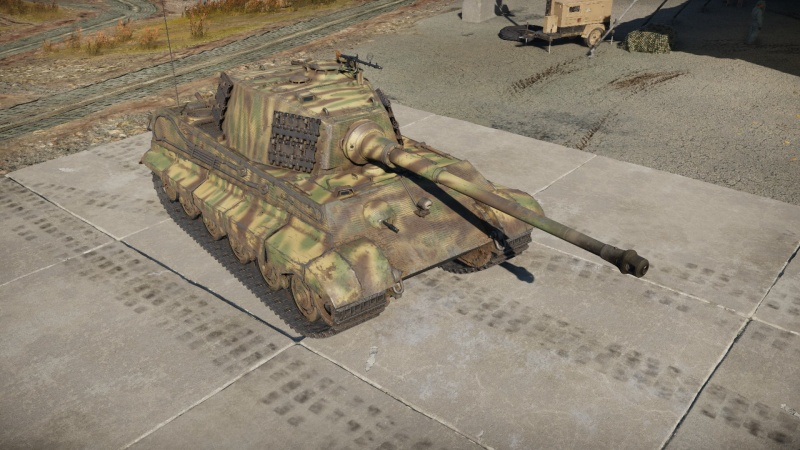
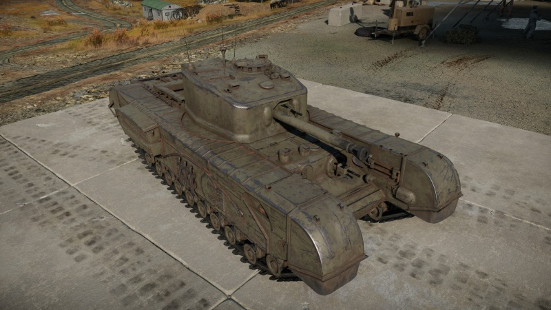
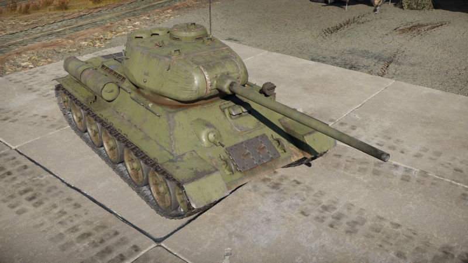
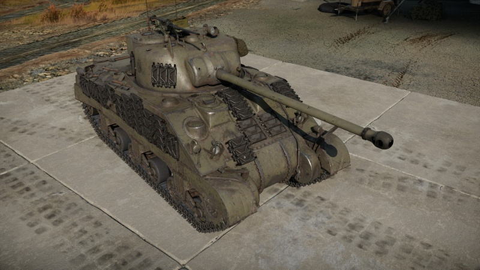
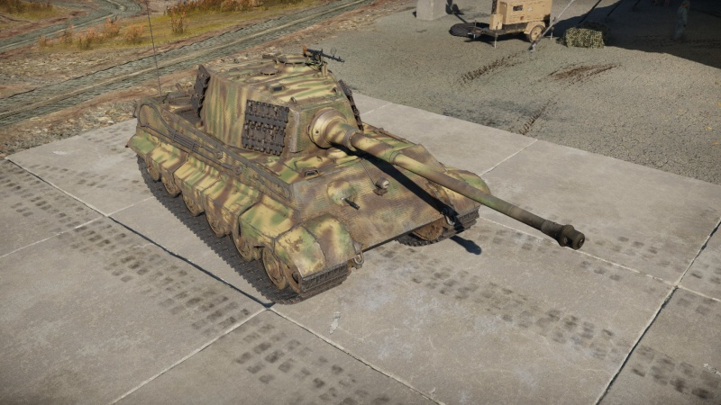
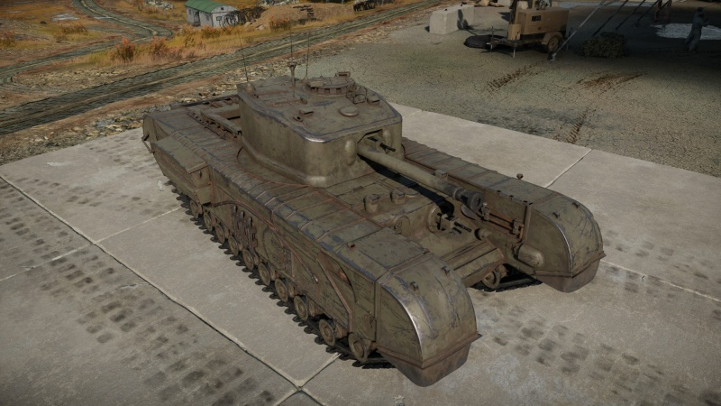

Paises
União Soviética
T34-85
Estados Unidos
 

Sherman-Firefly
Alemanha
Tiger-II
Grã-Bretanha
Churchill Mk.VII
Apresentando a mais nova acadêmia brasileira de Sensha-Do, um esporte Japonês que consiste em bathlhas amistosas com tanques militares da segunda guerra.
Segurança em primeiro lugar:: "Cuidado, não é recomendado para menores".
Os tanques são municiados com projetéis circulares, ou seja, não penetram o tanque, existem sensores de impactos que identificam onde o projétil acertou, os campos de batalha são fícticios e afastados das grandes cidades, nosso esporte é uma forma diferente de usar a antiga arma de guerra pesada, o Tanque.
União Soviética
T34-85
Estados Unidos

Sherman-Firefly
Alemanha
Tiger-II
Grã-Bretanha
Churchill Mk.VII